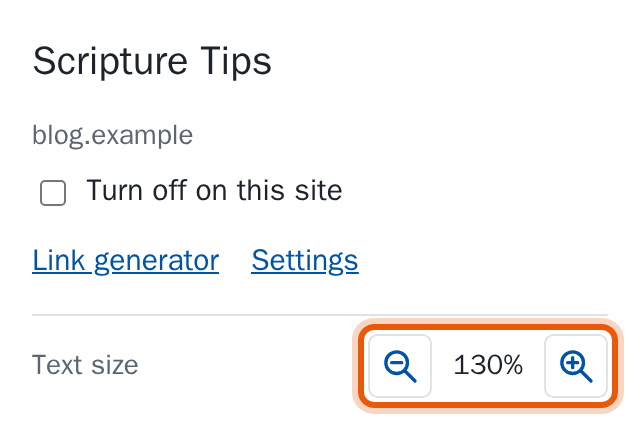
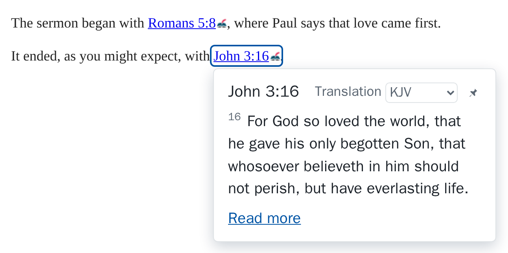

The passage tooltips can show their words larger or smaller. This is for reading comfort: it changes only the text inside the tooltips, never the website's own text, and not the extension's own screens.

The sizes are 85%, 100%, 115%, 130%, 150%, 175% and 200% of the normal size. 100% is where it starts. A button is dimmed at the end of the range.
A passage tooltip that is open changes at once, and every tooltip you open afterwards, on any website, uses the new size. The popup itself stays the same size.

Only the passage tooltip: its heading, the passage, the translation menu and the credit. It doesn't change the text of the website you're reading, the toolbar popup, the settings page or the link generator, and a website's own Scripture Tips plugin keeps its own size. Your browser's own zoom (Ctrl and +) still works as well, and changes everything on the page.
The size is kept in this browser only. It isn't carried to your other devices by your browser's sync, because a size that suits a desktop is often wrong on a phone.